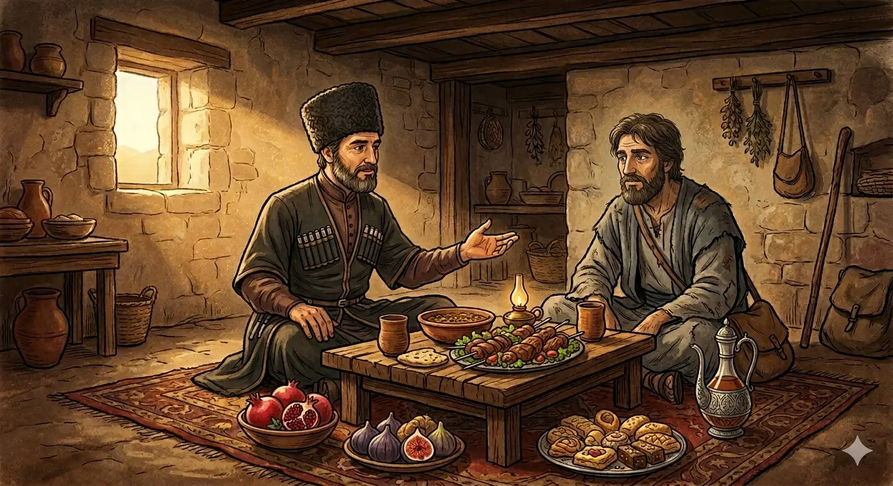

И.А. Дахкильгов. Хьехаме дувцарш - поучительные рассказы-притчи.
И.А. Дахкильгов. Хьехаме дувцарш - поучительные рассказы-притчи. Из ингушского фольклора.

Динага хьежжа нах къеста ма бе
Гаьннарча наькъагӀа ваьнна водаш хиннав ИбрахӀим-пайхамар. КӀаьд а венна, цхьан гаьн кӀала салаӀа Ӏохайнав из. ТӀорме чура кхача баьккха из баа волавеннав. Цу хана тӀехвоалаш хиннав бусалба им диланза вола цхьа саг. ЧӀоагӀа меца хиннав из. КхоалгӀа ди да ше хӀама ца дуа, леча эттав ше, кӀезига-мукъагӀа яа хӀама я шийна, аьнна, дийхад цу саго. - Со Даьлах тешаш пайхамар ва. Ды боацача наха тоам бе йиш яц са. Им делла, аз лечара воаккх хьо, - аьннад ИбрахӀам-пайхамара. - Моцалла Ӏазап озаш валар дикагӀа хет сона, къахетам фуб ца ховча наьха им дуллачул, - оалаш, дӀаволавеннав из саг. Сигалара лаьтта сердал ессай - духьала эттад Джабраил-малейк. Бехк боаккхаш аьннад цо: - Вай Веза-Воккхачо дайтад со. Хьона раьза вац из, хьога ала а йоах: "ИбрахӀам, из саг сайха тийша воаццашехьа, укх шовзткъача шера кхоабаш лелаваьв аз, Ӏа цкъа кхаллал а хӀама еннаяц цунна, лечара из варгволаш". Малейк сигала дӀадахад. Цу сагӀадехарга тӀехьаведдав ИбрахӀам-пайхамар. Юхавоалаваьв, вузаваьв. Виза ваьлча, цунга хаьттад мискача саго: - Из фуд хьа? Цкъа сона "ак" аьлар Ӏа, хӀанз со вузаваьв Ӏа? Джабраил-малейкага гӀолла шийга Далла баь хинна хоам дӀабайзийтаб пайхамаро. ЧӀоагӀа цецваьннав из саг. Аьннад цо: - Шийх тешаш боацача нахаца а хьа Даьла селлара къахетаме волаш хиларах цунца им дул аз!
РУССКИЙ
Не различайте людей по их религии
Пророк Ибрахим шел дальнею дорогою. Он устал и сел под деревом отдохнуть, достал свои припасы и начал обедать. В это время по дороге шел изголодавшийся язычник. Увидел он обедающего Ибрахима и попросил у него еды, сославшись на то, что третий день, как он ничего не ел и вот-вот может свалиться и умереть на дороге. - Я праведный человек и не могу ублажать неверных. Перейди в мою веру, и я спасу тебя от голодной смерти, - ответил Ибрахим. - Да лучше я погибну мученической смертью, чем приму веру человека, не имеющего сострадания к людям! - воскликнул язычник и поплелся своей дорогой. С неба на землю упал свет, и появился ангел Джабраил. Он сказал с укоризною: - Меня послал к тебе наш Всевышний. Он недоволен тобою и говорит: "Ибрахим, я сорок лет давал пропитание этому человеку, хотя он и не поклоняется мне, ты же отказался один раз накормить его и тем самым спасти от голодной смерти". Ангел исчез. Ибрахим бросился вдогонку и вернул нищего, усадил и накормил его. Насытился нищий и спросил: - Почему ты сначала отказал мне, а потом передумал? Ибрахим поведал ему о своем разговоре с ангелом Джабраилом. Язычник был поражен этим и решил: - Раз твой бог столь милосерден к людям, даже если они и не поклоняются ему, я принимаю твою веру. Тут же Ибрахим принял его в лоно ислама.
ENGLISH
Do not discriminate against people on the basis of their religion
The Prophet Ibrahim was travelling a long way. He grew tired and sat down under a tree to rest; he took out his provisions and began to eat. At that moment, a starving pagan was walking along the road. He saw Ibrahim eating and asked him for food, explaining that it had been three days since he had eaten anything and that he was on the verge of collapsing and dying by the roadside. 'I am a righteous man and cannot appease the unbelievers. 'Convert to my faith, and I shall save you from starvation,' replied Ibrahim. 'I would rather die a martyr's death than accept the faith of a man who has no compassion for others!' exclaimed the pagan, and trudged on his way. A light fell from the heavens to the earth, and the angel Jibril appeared. He said reproachfully: 'Our Most High has sent me to you. He is displeased with you and says: "Ibrahim, for forty years I have provided for this man, even though he does not worship Me, yet you refused just once to feed him and thereby save him from starvation."' The angel vanished. Ibrahim rushed after him, brought the beggar back, sat him down and fed him. Once the beggar had eaten his fill, he asked: 'Why did you refuse me at first, only to change your mind later?' Ibrahim told him about his conversation with the angel Jibril. The pagan was astonished by this and decided: 'Since your God is so merciful towards people, even if they do not worship Him, I accept your faith.' Ibrahim immediately welcomed him into the fold of Islam.
НОХЧИЙН
Дине хьаьжжина нах къеста ма бе
Геннарчу новкъа ваьллу воьдуш хилла ИбрахӀим-пайхамар. КӀад а велла, цхьан диттан кӀел садаӀан охьахиъна иза. ТӀоьрмиг чуьра кхача баьккхина иза баа волавелла. Цу хенахь тӀехволуш хилла бусалба им диланза волу цхьа стаг. ЧӀогӀа меца хилла хилла иза. КхоалгӀа де ду ша хӀума ца дуу, леча хӀоьттина ша, кӀезиг мукъна йаа хӀума йаа хӀума йа шена, аьлла, дехна цу стага. - Со Делах тешаш пайхамар ву. Дин доцучу нахан там бан йиш йац сан. Им дилла, ас лечура воккху хьо, - аьлла ИбрахӀим-пайхамара. - Мацалла Ӏазап узуш валар диках хета суна, къинхетам хӀун ду ца хуучу наха им дуьллучул, - олуш, дӀаволавелла и стаг. Стиглара лаьтта серло йоьссина - дуьхьала хӀоьттина Джабраил-малик. Бехк боккхуш аьлла цо: - Вай Веза-Воккхачо даийтина со. Хьуна реза вац иза, хьоьга ала а боху: "ИбрахӀим, и стаг сайха тешна воццушехьа, хӀокху шовзткъа шарахь кхобуш лелавина ас, ахь цкъа кхаллал а хӀума йеллайац цунна, лечура иза верволуш". Малик стигала дӀадахна. Цу сагӀадоьхучун тӀаьхьаведда ИбрахӀим-пайхамар. Вухавалийна, вузийна. Вуьзна ваьлча, цуьнга хаьттина мискачу стага: - Иза хӀун ду хьан? Цкъа соьга "ак" элира ахь, хӀинца со вузавина ахь? Джабраил-маликахула шега Далла бина хаам дӀабовзитина пайхамаро. ЧӀогӀа цецваьлла и стаг. Аьлла цо: - Шех тешаш боцучу нахаца а хьан Дела сел къинхетаме волуш хиларах цуьнца им дуьллу ас!
ПОГОВОРКИ
Дика малав, аьлча, сона дикавар – дика ва, яхад. Спросили: “Кто хороший?” Ответили: “Тот, кто мне хорошее делает”. Asked "Who is good?", they answered: "Whoever is good to me." Дика мила ву, аьлча, суна дикаверг - дика ву, баьхна.Мецачо дуӀашка ладувгӀац – пхьерийга сатувс цо. Голодный не слышит молитвы – он думает об ужине. A hungry man doesn't listen to prayers — he's thinking about supper. Мецачо доӀанашка ла ца дугӀу – пхьарана сатуьйсу цо.Саг вац вӀалла гӀалат ца воалаш, говра яц цӀаккха ког дӀа ца кхеташ. Нет человека, который бы не ошибся, нет коня, который бы не споткнулся. There is no man who never makes a mistake, and no horse that never stumbles. Стаг вац ваьлла гӀалат ца воьлуш, говр йац цкъа а ког дӀа ца кхеташ.Саго даь дика хӀама лар йоацаш дусаргдац. От добрых дел хоть след да останется. A good deed never disappears entirely — some trace of it remains. Стага дина дика хӀума лар йоцуш дуьсур дац.Саго ду дика шийна ду, саго ду во а шийна ду. Сделал доброе дело – себе сделал; поступил дурно – себе навредил. A good deed is done for oneself; a bad deed harms oneself too. Стага дина дика шена ду, стага дина вон а шена ду.СагӀийна цӀаьрмата хила мегаргвац. На подаяние (пожертвование) нельзя скупиться. One must not be stingy with charity. СагӀина сутара хила мегар дац.Хьо хье дика хуле, нах а хургба хьоца дика. Будь сам хорошим, тогда и люди будут к тебе хорошо относиться. Be good yourself, and people will be good to you in return. Хьо хьой дика хилахь, нах а хир бу хьоьца дика.Хьувзаш бале а никъ тол. Пусть дорога и извилиста, все же она лучше, чем бездорожье. A winding road is still better than no road at all. Хьийзаш балахь а некъ тоьлу.Цхьан бе дӀакховдадаьр вокха бе хьаийцад. Поданное одной рукой, забрали другой. What was given with one hand was taken back with the other. Цхьана буйнахь дӀакховдинарг вукха буйно схьаэцна.Шийца лаьца эздел хьаьшана доккхагӀа хет оттадаьча шунала. Для гостя обхождение ценнее угощения. For a guest, gracious treatment matters more than the feast set before him. Шеца лаьцна оьздангалла хьашан доккхах хета хӀоттийначу шуьнал.Ӏайха диканга сатувсе, нахаца дика хила. Хочешь иметь лучшую долю – по-хорошему относись к людям. If you want a better lot in life, treat people well. Ахь дикане сатийсахь, нахаца дика хила.Ӏайха кхехкка дӀаденнар кулг хьокхарг хьаэца. Отдавай чашу, наполненную с верхом, а принимай назад, наполненную вровень с краями. Give away a cup filled to overflowing, and accept one back filled level with the rim. Айхьа берттелц дӀаделларг куьг хьокхург схьаэца.